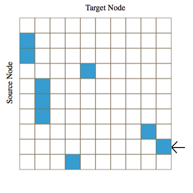

<!DOCTYPE html>
<html lang="en">
<head>
    <meta charset="UTF-8">
        <title>My experiment</title>
        <script src="jspsych-6.1.0/jspsych.js"></script>
        <script src="jspsych-6.1.0/plugins/jspsych-instructions.js"></script>
        <script src="jspsych-6.1.0/plugins/jspsych-html-keyboard-response.js"></script>
        <script src="jspsych-6.1.0/plugins/jspsych-json-graph-button-response.js"></script>
        <script src="jspsych-6.1.0/plugins/jspsych-json-graph-slider-response.js"></script>
        <script src="jspsych-6.1.0/plugins/jspsych-json-graph-question-response.js"></script>
        <script src="jspsych-6.1.0/plugins/jspsych-survey-likert.js"></script>
        <script src="jspsych-6.1.0/plugins/jspsych-external-html.js"></script>
        <script src="jspsych-6.1.0/plugins/jspsych-html-button-response.js"></script>
        <script src="jspsych-6.1.0/plugins/jspsych-image-slider-response.js"></script>
        <link href="jspsych-6.1.0/css/jspsych.css" rel="stylesheet" type="text/css"></link>
        <link href="jspsych-6.1.0/css/graph.css" rel="stylesheet" type="text/css"></link>

        <script src="JS/libs/g6.min.js"></script>
        <script src="JS/libs/jquery-3.1.1.min.js"></script>
        <script src="JS/libs/d3.min.js"></script>

        <script src="https://d3js.org/d3-dispatch.v1.min.js"></script>
        <script src="https://d3js.org/d3-quadtree.v1.min.js"></script>
        <script src="https://d3js.org/d3-timer.v1.min.js"></script>
        <script src="https://d3js.org/d3-force.v2.min.js"></script>

        <script src="JS/AdjacencyMat_n.js"></script>
        <script src="JS/Bipartite_n.js"></script>
        <script src="JS/network_d3-force_n.js"></script>


    </head>
    <body>

    </body>
    <script>

        const BIPARTITE = 1;
        const NODELINK = 2;
        const ADJACENCY = 3;
        const stimu_h = 700;
        const stimu_w = 700;

        const TYPE = 2//Math.floor(Math.random() * 3) + 1;

      /* create timeline */
         var timeline = [];

         /* define welcome message trial */
         var welcome = {
           type: "html-keyboard-response",
           stimulus: "Welcome to the study. Press any key to begin."
         };
         timeline.push(welcome);


         var check_consent = function(elem) {
           if (document.getElementById('consent_checkbox').checked) {
             return true;
           }
           else {
             alert("If you wish to participate, you must check the box next to the statement 'I agree to participate in this study.'");
             return false;
           }
           return false;
         };


         // declare the block.
         var consent = {
           type:'external-html',
           url: "bp_consent.html",
           cont_btn: "start",
           check_fn: check_consent
         };
         timeline.push(consent);


//style for internal div
// style='float: left;'

        var intro =   "<p>In this study, you will be shown a network using different visualization strategies</p>"+
                      "<p>The next few pages will contain a basic explaination of the visualization strategies"+
                      " and how the information is expressed.</p>" +
                      "<p>Press Continue to go to the next slide.</p>";

        var nl_instructions =
        "<h2>Node Link Visualization</h2>"+
        "<p></p><p></p>"+
        "<p style='width: 700px;'>This is a node link visualization. Each node is representated as a circle. "+
        "The connections between nodes are visualized as a arrow."+
        "<div style='width: 700px;'>"+
        "<div></img>"+
        "</div>";

        var am_instructions_1 =
        "<h2>Adjacency Matrix Visualization</h2>"+
        "<p></p><p></p>"+
        "<p style='width: 700px;'>This is an adjacency matrix visualization. Each node is represented as a row or column. "+
        "The connections between nodes are visualized as a filled in box in the matrix. "+
        "</p><p style='width: 700px;'>The connections between nodes are directional. "+
        "The <b>row</b> a filled in box corresponds with the source of the connection, "+
        "and the <b>column</b> of a filled in box corresponds with the target of the connection"+
        "<div style='width: 700px;'>"+
        "<div></img>"+
        "</div>";


        var am_instructions_2 =
        "<h2>Adjacency Matrix Visualization</h2>"+
        "<p></p><p></p>"+
        "<p style='width: 700px;'>Here we see a single highlighted node, in this case, the \"second\" node of this network."+
        "The filled in boxes in the row correspond with outgoing edges. So we see that there is a single outgoing edge from the \"second\" node to the \"first\" node "+
        "</p><p style='width: 700px;'>The filled in boxes in the column correspond with incoming edges. "+
        "So we can see that the highlighted node has 3 incomming edges. "+
        "and the column of a filled in box corresponds with the target of the connection"+
        "<div style='width: 700px;'>"+
        "<div></img>"+
        "</div>";

        var am_instructions_3 =
        "<h2>Adjacency Matrix Visualization</h2>"+
        "<p></p><p></p>"+
        "<p style='width: 700px;'>Each filled in box represents a single edge. "+
        "The edge pointed to in the visualization below represents an edge from the 9th node (as it is in the 9th row)<br/> "+
        "to the 10th node (as it is in the 10th column) "+
        "</p>"+
        "<div style='width: 700px;'>"+
        "</img>"+
        "</div>";

        var bp_instructions =
        "<h2>Bipartite Visualization</h2>"+
        "<p></p><p></p>"+
        "<p style='width: 700px;'>This is an bipartite visualization. Each node is represented twice on a vertical list of nodes. "+
        "The connections between nodes are visualized as connections going between the two vertical list "+
        "</p><p style='width: 700px;'>As in the previous examples, the connections between nodes are directional. "+
        "the first column corresponds with the source of the connection, "+
        "and the second column corresponds with the target of the connection"+
        "<div style='width: 700px;'>"+
        "<div></img>"+
        "</div>";


        ins_pages = [intro];


        switch(TYPE){
          case 1:
            ins_pages.push(bp_instructions);
            break;
          case 2:
            ins_pages.push(nl_instructions);
            break;
          case 3:
            ins_pages.push(am_instructions_1);
            ins_pages.push(am_instructions_2);
            ins_pages.push(am_instructions_3);
            break;
          }


        console.log(ins_pages);

         var instructions = {
              type: 'instructions',
              pages: ins_pages,
              show_clickable_nav: true
          }
          timeline.push(instructions)


        var file_list = ['JSON/pilot_20_1_2_ordered.json',
                         'JSON/pilot_20_2_2_ordered.json',
                         'JSON/pilot_20_4_2_ordered.json',
                         'JSON/pilot_50_1_3_ordered.json',
                         'JSON/pilot_50_2_3_ordered.json',
                         'JSON/pilot_50_4_3_ordered.json']


       var scale = [
         "Very Difficult",
         "Somewhat Difficult",
         "Neutral",
         "Somewhat Easy",
         "Very Easy"
          ];

       var likert_page = {
         type: 'survey-likert',
         questions: [
           {prompt: "How difficult was the previous question?", labels: scale, required: true}
         ]
          };

        var test_procedures = [];

        //SP = Shortest Path
        var SP_highlight = [
          ['C-Q'],
          ['B-K'],
          ['G-A'],
          ['AF-Q'],
          ['Z-R'],
          ['H-V'],
        ]

        var SP_stimuli = [
          {stimulus: {file:file_list[0], type:TYPE, highlight:SP_highlight[0]},
           prompt: "<div style='width: 800px'><p>How many edges are in the shortest path from node " + SP_highlight[0][0].split("-")[0] + " to node " + SP_highlight[0][0].split("-")[1] + "?</p></div>"},
          {stimulus: {file:file_list[1], type:TYPE, highlight:SP_highlight[1]},
           prompt: "<div style='width: 800px'><p>How many edges are in the shortest path from node " + SP_highlight[1][0].split("-")[0] + " to node " + SP_highlight[1][0].split("-")[1] + "?</p></div>"},
          {stimulus: {file:file_list[2], type:TYPE, highlight:SP_highlight[2]},
           prompt: "<div style='width: 800px'><p>How many edges are in the shortest path from node " + SP_highlight[2][0].split("-")[0] + " to node " + SP_highlight[2][0].split("-")[1] + "?</p></div>"},
          {stimulus: {file:file_list[3], type:TYPE, highlight:SP_highlight[3]},
           prompt: "<div style='width: 800px'><p>How many edges are in the shortest path from node " + SP_highlight[3][0].split("-")[0] + " to node " + SP_highlight[3][0].split("-")[1] + "?</p></div>"},
          {stimulus: {file:file_list[4], type:TYPE, highlight:SP_highlight[4]},
           prompt: "<div style='width: 800px'><p>How many edges are in the shortest path from node " + SP_highlight[4][0].split("-")[0] + " to node " + SP_highlight[4][0].split("-")[1] + "?</p></div>"},
          {stimulus: {file:file_list[5], type:TYPE, highlight:SP_highlight[5]},
           prompt: "<div style='width: 800px'><p>How many edges are in the shortest path from node " + SP_highlight[5][0].split("-")[0] + " to node " + SP_highlight[5][0].split("-")[1] + "?</p></div>"}
           ]

        var SP_test = {
          type: "json-graph-question-response",
          stimulus: jsPsych.timelineVariable('stimulus'),
          prompt: jsPsych.timelineVariable('prompt'),
          stimulus_width: stimu_w,
          stimulus_height: stimu_h
        }

        var SP_example = "";
        switch(TYPE){
          case 1:
            SP_example = "";
            break;
          case 2:
            SP_example = "Nodelink";
            break;
          case 3:
            SP_example = "";
            break;
          }

        var SP_intro = {
          type: "html-keyboard-response",
          stimulus: "<div style='width: 800px;'><p style='text-align: left'>"+
          "The following task is to find the shortest path between two specified nodes. "+
          "This direction will be specified. "+
          "Your instructions are to find the shortest path between the nodes, and then count the number of edges in that path. "+
          "There may not always be a possible shortest path, in this case please enter 0. "+
          "An example problem is provided below: </p>"+
          SP_example+
          "<br></br><br></br><p>"+
          "This task will start after you press any key."+
          "</p></div>"
        };


        var SP_test_procedure = {
          timeline: [SP_test, likert_page],
          randomize_order: true,
          timeline_variables: SP_stimuli
        }

        var SP_grand_procedure = {
          timeline: [SP_intro, SP_test_procedure]
        }


        //IL = Incoming Links
        var IL_highlight = [
          ['F-F'],
          ['F-F'],
          ['F-F'],
          ['F-F'],
          ['F-F'],
          ['F-F'],
        ]


        var IL_stimuli = [
          {stimulus: {file:file_list[0], type:TYPE, highlight:IL_highlight[0]},
           prompt: "<div style='width: 800px'><p>How many incoming edges does node " + IL_highlight[0][0].split("-")[0] + " have?</p></div>"},
          {stimulus: {file:file_list[1], type:TYPE, highlight:IL_highlight[1]},
           prompt: "<div style='width: 800px'><p>How many incoming edges does node "+IL_highlight[1][0].split("-")[0]+" have?</p></div>"},
          {stimulus: {file:file_list[2], type:TYPE, highlight:IL_highlight[2]},
           prompt: "<div style='width: 800px'><p>How many incoming edges does node "+IL_highlight[2][0].split("-")[0]+" have?</p></div>"},
          {stimulus: {file:file_list[3], type:TYPE, highlight:IL_highlight[3]},
           prompt: "<div style='width: 800px'><p>How many incoming edges does node "+IL_highlight[3][0].split("-")[0]+" have?</p></div>"},
          {stimulus: {file:file_list[4], type:TYPE, highlight:IL_highlight[4]},
           prompt: "<div style='width: 800px'><p>How many incoming edges does node "+IL_highlight[4][0].split("-")[0]+" have?</p></div>"},
          {stimulus: {file:file_list[5], type:TYPE, highlight:IL_highlight[5]},
           prompt: "<div style='width: 800px'><p>How many incoming edges does node "+IL_highlight[5][0].split("-")[0]+" have?</p></div>"}
           ]

       var IL_example = "";
       switch(TYPE){
         case 1:
           IL_example = "";
           break;
         case 2:
           IL_example = "Nodelink";
           break;
         case 3:
           IL_example = "";
           break;
         }

       var IL_intro = {
         type: "html-keyboard-response",
         stimulus: "<div style='width: 800px;'><p style='text-align: left'>"+
         "The following task is to find the number of incoming edges into a specified nodes. "+
         "The node will be specified, and you must find the number of edges coming from other nodes to the specified nodes. " +
         "An example problem is provided below: <p><>"+
         IL_example+
         "<br></br><br></br><p>"+
         "This task will start after you press any key."+
         "</p></div>"
       };

        var IL_test = {
          type: "json-graph-question-response",
          stimulus: jsPsych.timelineVariable('stimulus'),
          prompt: jsPsych.timelineVariable('prompt'),
          stimulus_width: stimu_w,
          stimulus_height: stimu_h
        }


        var IL_test_procedure = {
          timeline: [IL_test, likert_page],
          randomize_order: true,
          timeline_variables: IL_stimuli
        }

        var IL_grand_procedure = {
          timeline: [IL_intro, IL_test_procedure]
        }


        //CN = Common Neighbors
        var CN_stimuli = [
          {stimulus: {file:file_list[0], type:TYPE, highlight:['F-F', 'B-B']},
          prompt: "<div style='width: 800px'><p>How many common neighbors are between F and B?</p></div>"},
          {stimulus: {file:file_list[1], type:TYPE, highlight:['F-F', 'B-B']},
          prompt: "<div style='width: 800px'><p>How many common neighbors are between F and B?</p></div>"},
          {stimulus: {file:file_list[2], type:TYPE, highlight:['F-F', 'B-B']},
          prompt: "<div style='width: 800px'><p>How many common neighbors are between F and B?</p></div>"},
          {stimulus: {file:file_list[3], type:TYPE, highlight:['F-F', 'BB-BB']},
          prompt: "<div style='width: 800px'><p>How many common neighbors are between F and BB?</p></div>"},
          {stimulus: {file:file_list[4], type:TYPE, highlight:['F-F', 'BB-BB']},
          prompt: "<div style='width: 800px'><p>How many common neighbors are between F and BB?</p></div>"},
          {stimulus: {file:file_list[5], type:TYPE, highlight:['F-F', 'BB-BB']},
          prompt: "<div style='width: 800px'><p>How many common neighbors are between F and BB?</p></div>"}
           ]

        var CN_test = {
          type: "json-graph-question-response",
          stimulus: jsPsych.timelineVariable('stimulus'),
          prompt: jsPsych.timelineVariable('prompt'),
          stimulus_width: stimu_w,
          stimulus_height: stimu_h
        }


        var CN_test_procedure = {
          timeline: [CN_test, likert_page],
          randomize_order: true,
          timeline_variables: CN_stimuli
        }


        //SG = Same Group

        var SG_stimuli = [
          {stimulus: {file:file_list[0], type:TYPE, highlight:['F-F', 'B-B']}},
          {stimulus: {file:file_list[1], type:TYPE, highlight:['F-F', 'B-B']}},
          {stimulus: {file:file_list[2], type:TYPE, highlight:['F-F', 'B-B']}},
          {stimulus: {file:file_list[3], type:TYPE, highlight:['F-F', 'BB-BB']}},
          {stimulus: {file:file_list[4], type:TYPE, highlight:['F-F', 'BB-BB']}},
          {stimulus: {file:file_list[5], type:TYPE, highlight:['F-F', 'BB-BB']}}
           ]

        var SG_test = {
          type: "json-graph-button-response",
          stimulus: jsPsych.timelineVariable('stimulus'),
          prompt: "<div style='width: 800px'><p>Are the two highlighted nodes a part of the same group?</p>"+
          "</div>",
          choices: ['Yes', 'No'],
          stimulus_width: stimu_w,
          stimulus_height: stimu_h
        }


        var SG_test_procedure = {
          timeline: [SG_test, likert_page],
          randomize_order: true,
          timeline_variables: SG_stimuli
        }

        test_procedures.push(SP_grand_procedure);
        //test_procedures.push(IL_test_procedure);
        //test_procedures.push(CN_test_procedure);
        //test_procedures.push(SG_test_procedure);


        //Adding the tests to the timeline in random order
        test_procedures = jsPsych.randomization.repeat(test_procedures, 1);
        timeline.push(test_procedures[0]);
        // timeline.push(test_procedures[1]);
        // timeline.push(test_procedures[2]);
        // timeline.push(test_procedures[3]);


        function saveData(name, data){
          var xhr = new XMLHttpRequest();
          xhr.open('POST', 'write_data2.php'); // 'write_data.php' is the path to the php file described above.
          xhr.setRequestHeader('Content-Type', 'application/json');
          xhr.send(JSON.stringify({filename: name, filedata: data}));
        }

        // call the saveData function after the experiment is over
        jsPsych.init({
            timeline:timeline,
           // code to define the experiment structure would go here...
           on_finish: function(){ saveData("experiment_data", jsPsych.data.get().csv()); }
        });


    </script>
</html>
